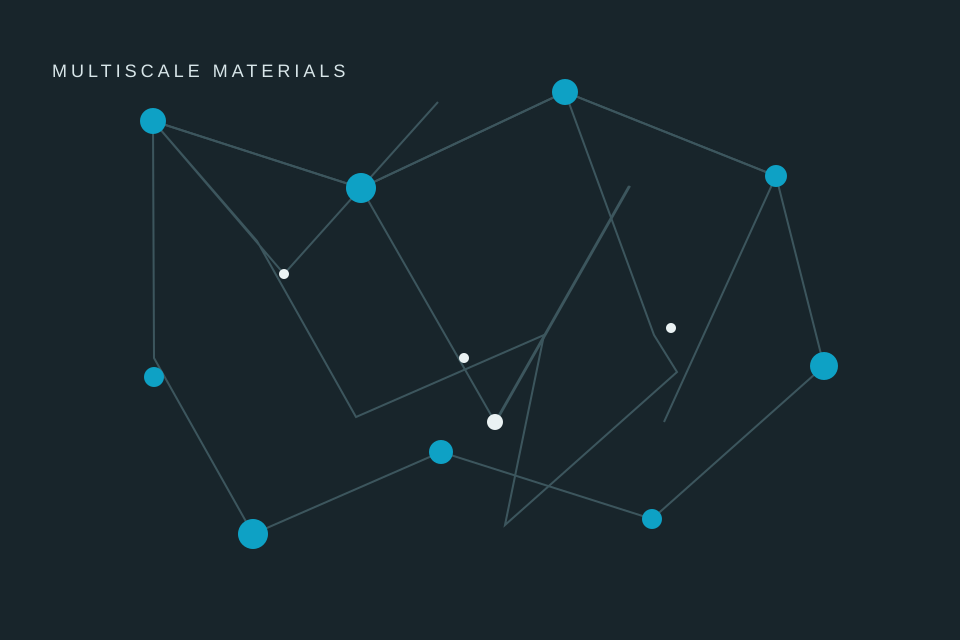
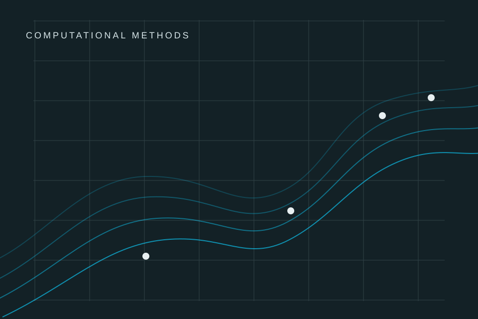
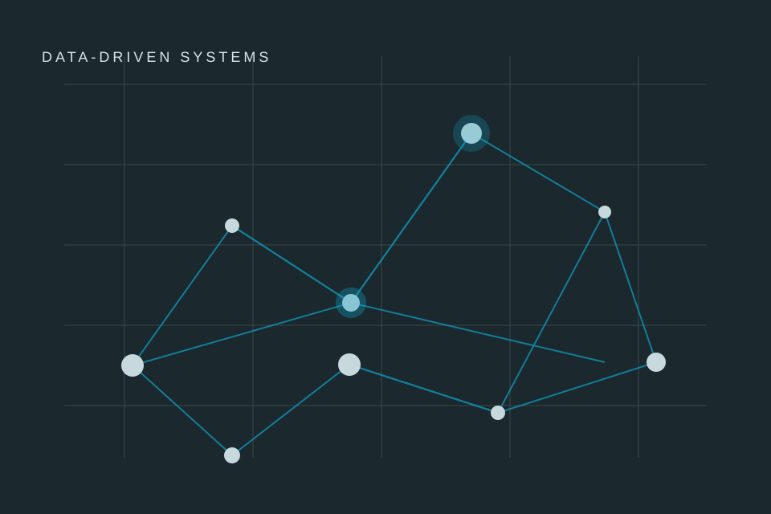
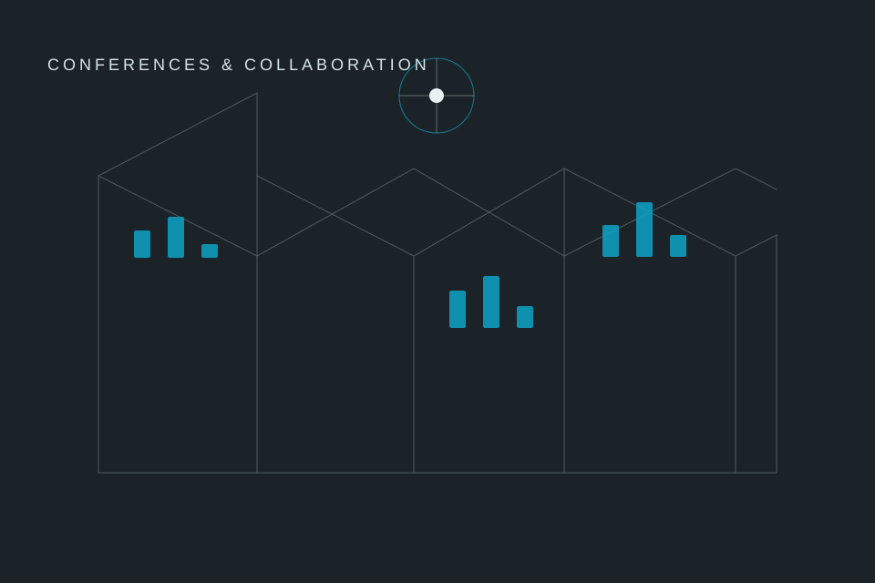

Gallery
Research Gallery
A place for project figures, talks, fieldwork, prototypes, and moments from collaborative work. The current visuals are local placeholders and can be replaced without changing the page layout.
Selected visuals




Image notes
- Use WebP or AVIF files for photographs and experiment figures.
- Keep captions short enough to scan, and include dates where relevant.
- Publish only images whose licences and collaborator permissions are clear.